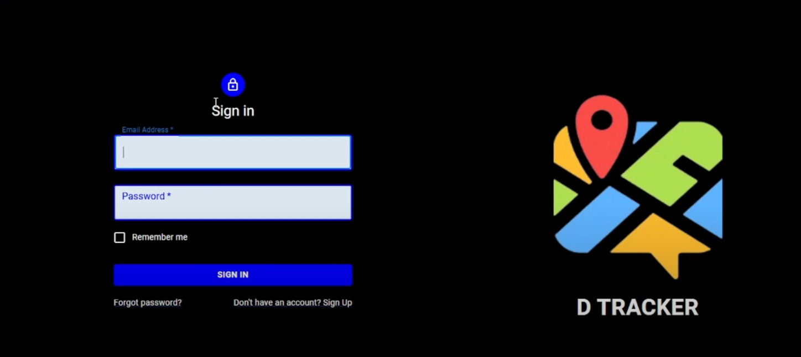
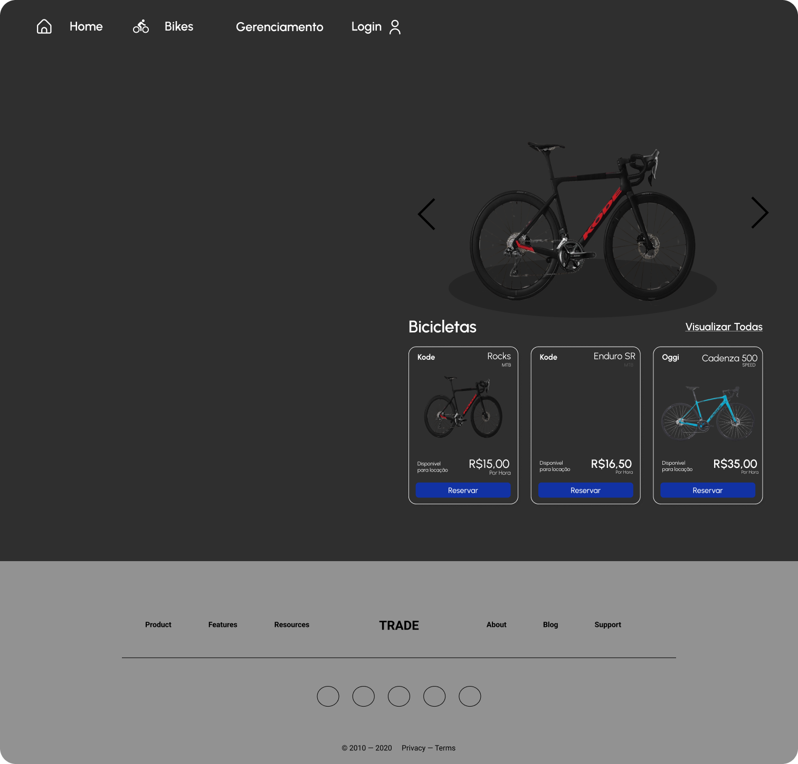
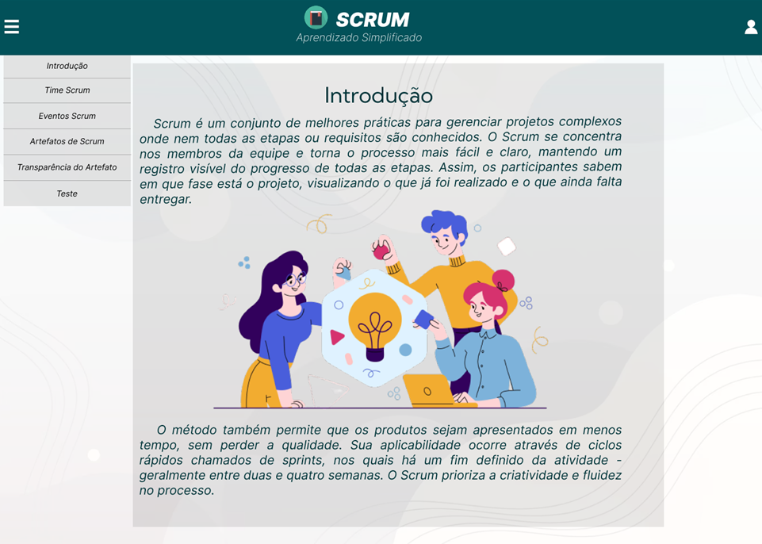

Curioso sobre o funcionamento do mundo, pai do Arthur, católico, entusiasta da programação e amante de música! Atualmente, estou cursando Desenvolvimento de Software Multiplataforma na Fatec Jacareí. Estou sempre em busca de novos desafios e oportunidades para aprender e crescer. Seja bem-vindo ao meu portfólio!
Desenvolvimento de Software Multiplataforma
2023-2025
Na faculdade, tive a oportunidade de ter contato com diversas tecnologias, como Node.js, JavaScript, TypeScript, PostgreSQL, MongoDB, Git, GitHub e outras. Com os trabalhos em grupo das ABPs, venho desenvolvendo minhas habilidades interpessoais e aprimorando minha capacidade de trabalhar em equipe. Ainda tenho muito a aprender, mas estou disposto a evoluir constantemente.
4º Semestre
2024-2
O desafio proposto foi, de especificar e construir uma aplicação mobile que permitisse aos usuários registrar e monitorar a ingestão diária de calorias e nutrientes, auxiliando no controle da alimentação e na manutenção da saúde. Neste projeto, tive a oportunidade de atuar como desenvolvedor.
3º Semestre
2024-1
O desafio proposto é desenvolver uma ferramenta de gerenciamento exclusivamente para o gestor de projetos, onde ele poderá administrar os dados apontados pelo editor e pelo revisor. O sistema deve permitir que o gestor delimite a área do projeto, carregue dados de suporte, cadastre usuários (editores e revisores), atribua áreas de trabalho e extraia estatísticas. Dessa forma, a ferramenta visa melhorar a eficiência e a qualidade dos projetos de mapeamento, centralizando as tarefas de gerenciamento dos dados fornecidos pelos colaboradores envolvidos no processo. Neste trabalho, tive a oportunidade de atuar como desenvolvedor e Scrum Master, o que me permitiu aprender mais sobre o gerenciamento de projetos..
2º Semestre
2023-2
Algumas pessoas gostariam de fazer um passeio de bicicleta na sua cidade ou durante uma viagem. O objetivo é desenvolver um aplicativo web peer-topeer para conectar proprietários e pessoas interessadas em alugar bicicletas. A aplicação deverá apenas fazer a intermediação entre as partes sem qualquer responsabilidade sobre pagamento. Neste trabalho tive a oportunidade de me aperfeiçoar como desenvolvedor.
1º Semestre
2023-1
O objetivo do projeto é desenvolver uma Aplicação Web de instruções para desenvolvimento de projetos ágeis (SCRUM) na área de TI. Neste trabalho tive a oportunidade de trabalhar como desenvolvedor.
Em breve!
Em breve!